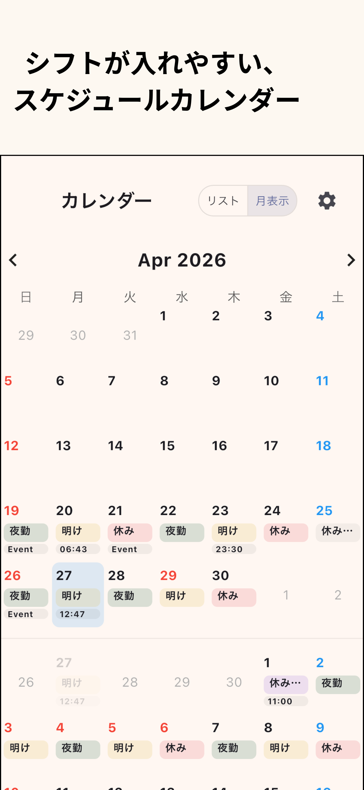
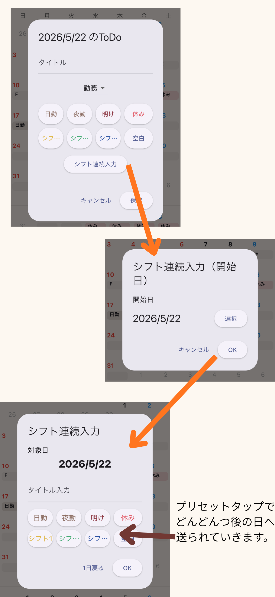
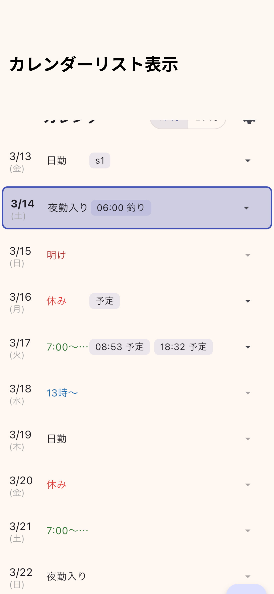
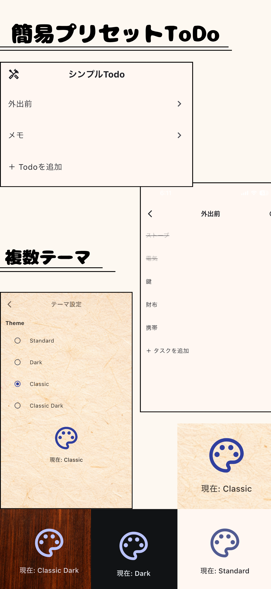
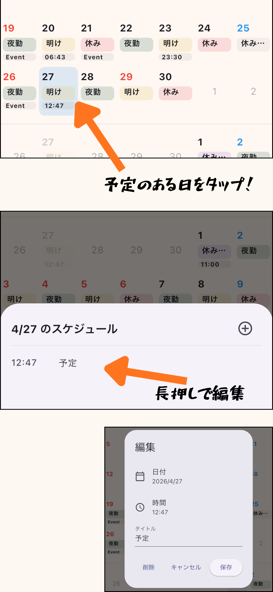
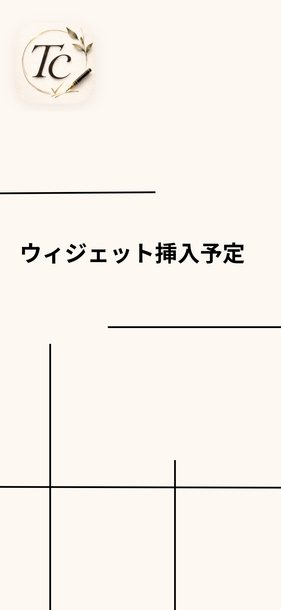

Shift / Calendar
Shift Calendar
ー・ー シフトを見やすく、予定もまとめて ー・ー
勤務シフト・予定・メモを、ひとつのカレンダーでまとめて管理できるアプリです。
シフトは連続で入力でき、色分け表示にも対応。
夜勤・日勤・休みなどの勤務予定を、見やすく整理できます。
ホームウィジェットにも対応しているため、アプリを開かなくても予定をすぐ確認できます。
- 勤務シフトと予定をまとめて確認
- シフトの連続入力・色分け表示に対応
- ホームウィジェットで予定をすぐ確認





